Your first AI intern
repetitive, admin, draining
secure and workflow-aware
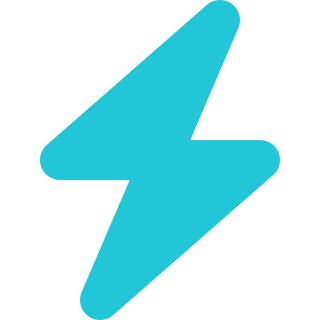
DelegateHand off repetitive and admin work that drains time and focus.
Goes beyond suggestions to get tasks completed end to end.
Out-of-the-box and trainable skills that grow with how you work.
Reliable, secure and workflow-aware by design.
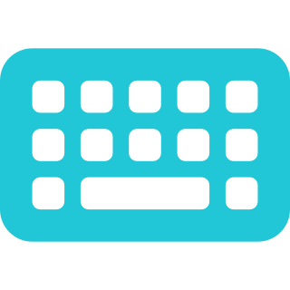
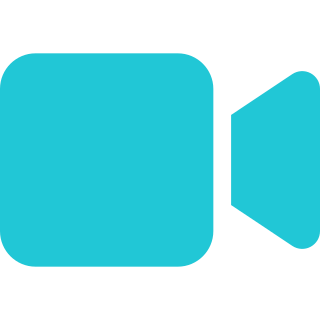
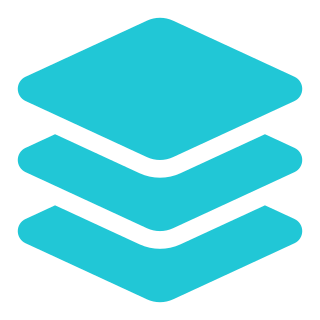
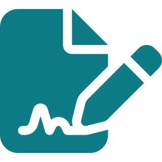
Define processes, contact SMEs, record their tasks and sign off on documents — then hand them to Autopilot and coding agents to build the solution.
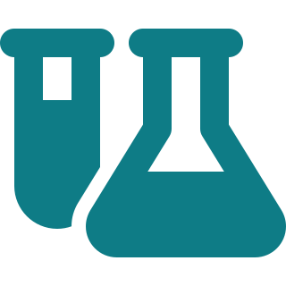
Run test cases, set up environments, run exploratory testing, and build and refine object repositories.
Intake and triage incoming work, validate and follow up on missing evidence, and resolve escalations and duplicates.
Plugged into your knowledge, docs, goals and competitive intel, runs enablement and training on demand.
The more you use it, the better it gets: a cross-team knowledge repository that surfaces tribal know-how.
Built on the same UiPath UIA foundation as RPA — materially more reliable on enterprise apps than screen-only vision. More than a CUA: an agent with skills, steering and multi-app orchestration on top.
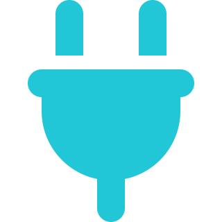
Ships on top of your existing UiPath deployment. No new IT approval and no new upgrade process — the UiPath Assistant upgrades into Delegate.
Every operation runs through the same RBAC, audit trail, credential vault and AI Trust Layer. Not bolted on — built in.
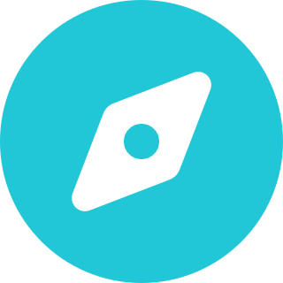
Discover and document processes, do more testing through exploratory setups, and free people for higher-value automation work.
Pull my case backlog from Salesforce and prioritize the day.
Summarize the case I'm viewing with related KB articles and similar past cases.
Look up a customer's licensing data without switching tools.
Pull recent App Insights logs for a tenant without navigating Azure.
Search Product Docs, KB, Slack, Confluence and past cases at once.
Generate a reply from case context to iterate on and send to Salesforce.
Run a predefined job with parameters without leaving the workflow.
One conversational surface across every tool the PSE touches.
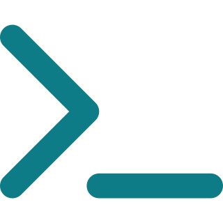
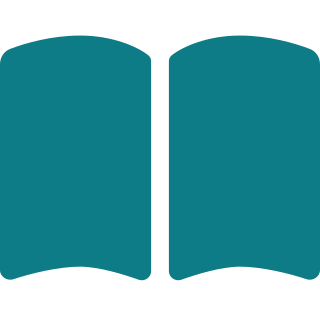
Your expertise
Reusable playbook
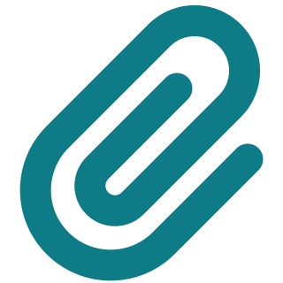
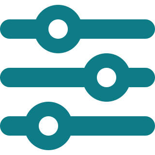
Approved apps
Approved URLs
Blocked apps
Blocked URLs
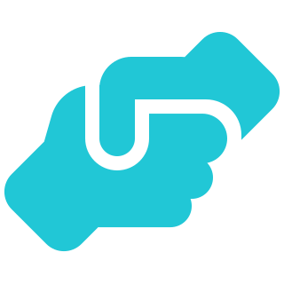
Delegate confirms every action before it runs. Full oversight on every step.
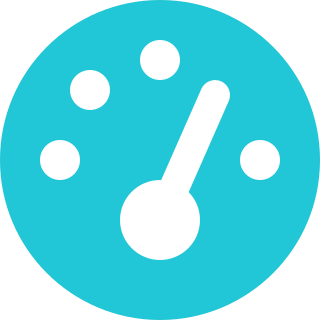
Delegate decides based on the risk level of each action — asking only when it matters.
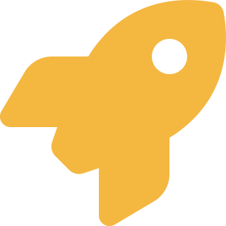
Full autonomy. Use with caution, only in trusted environments.
Central scheduling, queues and run management for every agent operation.
Secrets and credentials stay encrypted and brokered — never exposed to the agent.
Policy, redaction and model governance applied to every interaction.
Role-based access across all operations, mapped to your existing org.